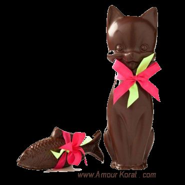
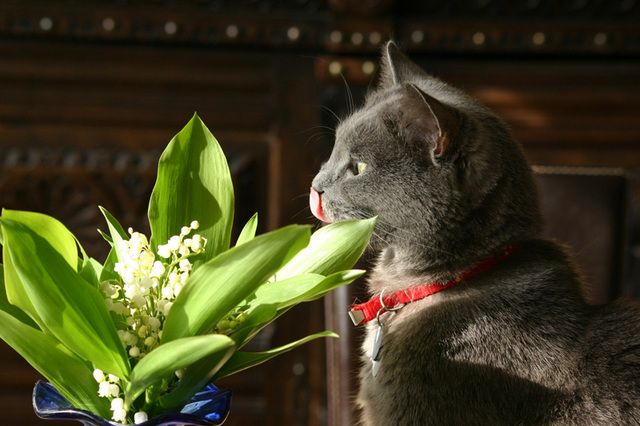
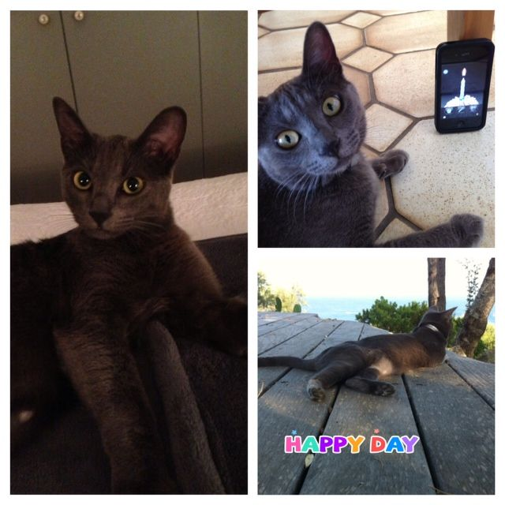
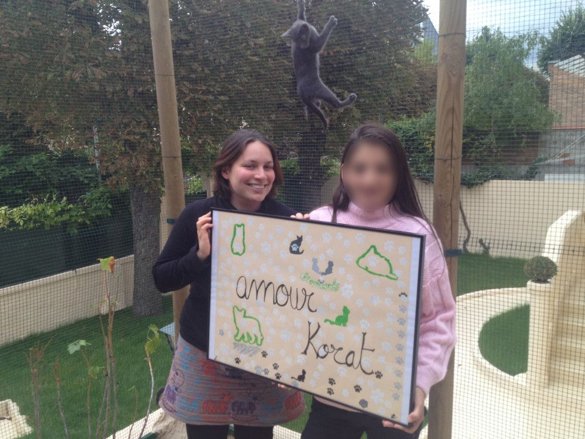
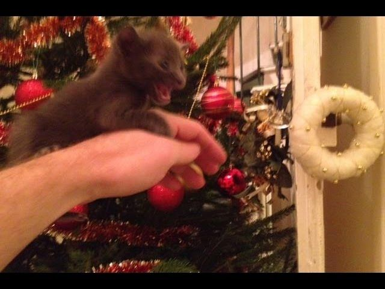
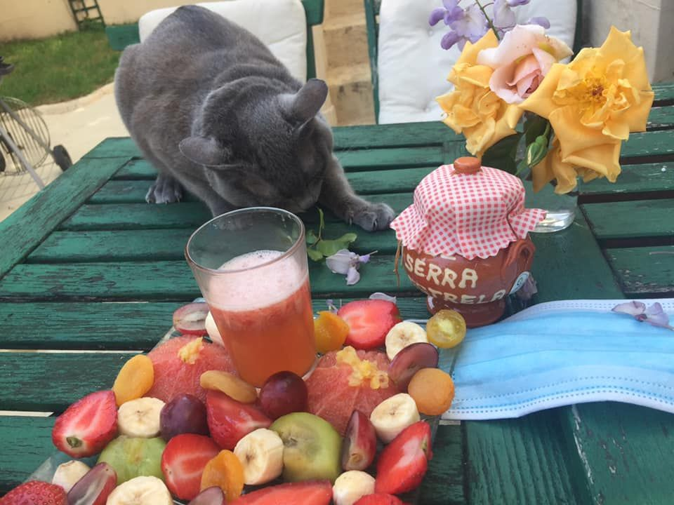

Au fil des années
Naissances, vacances, rencontres, fêtes : la vie de la chatterie, année après année.
2013

2013 Chatons
Janvier 2013 : une chatte Amour Korat pure race va mettre bas. Ci-dessous une photo d'elle allant humer…
Lire
Condoléances
Amour Korat's Hugo aujourd'hui il arrive par mail une bien triste nouvelle les mots manquent pour dire…
Lire
Pâques et Korat
Pâques = danger ! Partie toxique pour les chats en général et le Korat en particulier : Le chocolat est…
Lire
Muguet toxique
1er mai = danger ! Très toxique pour les chats (une des principales causes d'intoxication). La fête du…
LireMai 2013
1er mai = danger ! Très toxique pour les chats (une des principales causes d'intoxication). La fête du…
LireQuelques nouvelles
Un couple de Korat va bientôt livrer ses fruits. Vu l'attitude de Madame, son bidon tout plein, il n'y a…
Lire
Vacances
Bonnes vacances aux félins en général et aux Korats en particulier ! bon anniversaire aux Korats ! 12…
Lire
C'est la rentrée
S'intéresser à la race…Réserver son chaton… Revenir le voir à la chatterie…S'y passionner… Faire…
Lire
Animal Expo
Concours Korat Extrait interview film [Animal Expo & Radio Santé Animal], partie sur le Korat, 6 octobre…
Lire
Chat Korat dans l'élevage
Chat de race Korat s'amusant dans l'élevage filmés durant 20 minutes le long weekend du 11 novembre.…
Lire
Chaton Korat adoptable
Chatons de race Korat adoptables Chatons Korat adoptables : clic ici pour en savoir plus sur la…
Lire2014

Bonne année 2014 !
Bonne année aux Korats et à leurs propriétaires ! clic sur l'image pour voir le…
LireMiaous miaous de chatons
Film extrait de l'espace des chatons qui viennent de naître. Ils sont tous…
Lire
Korat timbré !
Timbre de Korat Merci aux propriétaires d'Isidore pour le cadeau rare du timbre d'Afghanistan d'un…
Lire
Korat nouvelles
S'il est fait réponse à chaque mail reçu par l'élevage, un retard entraîne actuellement des réponses…
LireÉté
Les korats vous souhaitent un très bon été.
LireRésumé en une page d'une portée Amour Korat
1/ Dans l'élevage Amour Korat Janvier 2013 : une chatte Amour Korat pure race va mettre bas. Elle allant…
Lire
Automne
automne 2014 Sommaire Henki Korat à l'Ile Maurice Un Korat bien né est facile à dresser Animal Expo…
Lire
1er conte avec un Korat comme personnage !
Joyeuses fêtes et bonne année… Une fois n'est pas coutume, voici une pub ! Non point un truc commercial…
Lire2015
2016
2017

2019
2020
Bonne année Korat 2020 !
2 Janvier 2020 Bonne année ! Bon même si une année qui commence par 2x20 sent forcément la quarantaine,…
Lire
Adoption Korat adulte
19 avril 2020 Je profite du confinement pour donner l'info de trois chats Korat adultes à adopter à…
LireKorat et pandémie
avril pandémie 2020 N'oubliez pas de vous faire livrer un stock de litières et de croquettes, il n'y a…
LireJoyeux noël et bon passage à 2021 par avance !
Joyeux noël et bon passage à 2021 par avance ! L'anomalie, le dernier Goncourt obtenu d'Hervé Le…
Lire